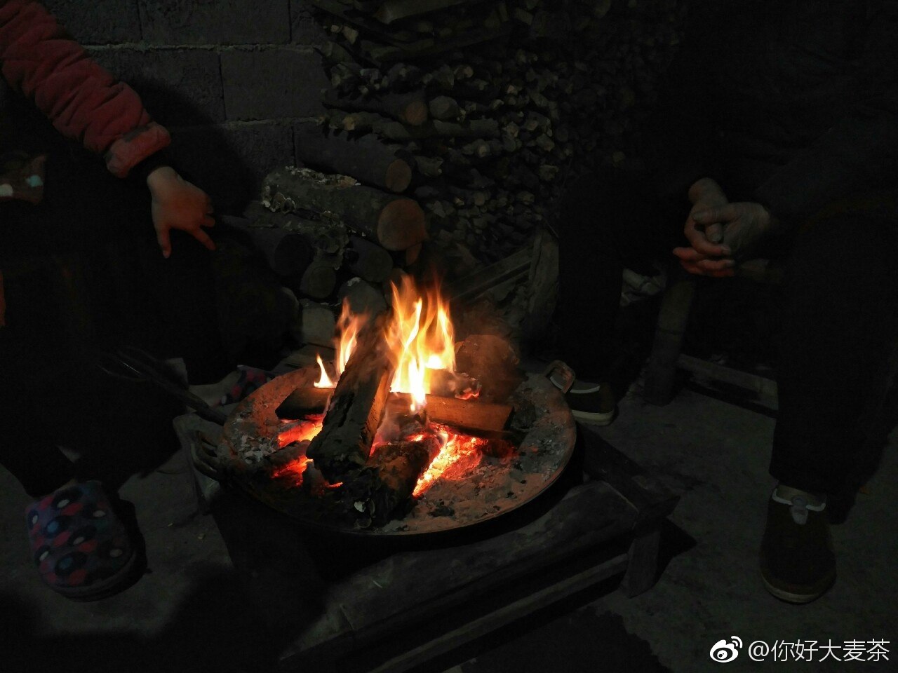

回复@渝夏夜的微风-hc:我个人认为大家都是地球生物链的，吃来吃去都好正常嘅！唯一一点，不要虐待，一击致命，不要为了变态的快感虐待动物。//@渝夏夜的微风-hc:关于杀生和吃肉，e大怎么想的？我不想杀生，但做好的肉摆上桌又忍不住吃，我就告诉自己，只为了营养吃肉，不能浪费，不能吃多@长睫毛的小都:#ee开心过年#又在媳妇儿家过年。每年来陕西，性格豪爽却从没有杀过鸡的岳父都会指派姐夫捉鸡、杀鸡，几年下来，姐夫也是一个杀鸡的好手。E大杀过🐔吗？
没杀过。晕血的朋友不要点进这个话题了，又是杀鸡又是杀羊的场面太刺激了。虽然红色是好兆头……哈哈。@长睫毛的小都:#ee开心过年#又在媳妇儿家过年。每年来陕西，性格豪爽却从没有杀过鸡的岳父都会指派姐夫捉鸡、杀鸡，几年下来，姐夫也是一个杀鸡的好手。E大杀过🐔吗？
看见这个我想起来有一次在张家界爬山，下大雨，到山上全身湿透了，又饿又冷。山上有个饭馆，只有辣菜。从不吃辣的我，就着那些辣菜吃了三碗米饭……从此开始能吃辣了。。@你好大麦茶:#ee开心过年#湖南腊肉，山里冬笋肉片汤，油炸小鱼，围炉夜话，开启养猪模式 